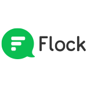
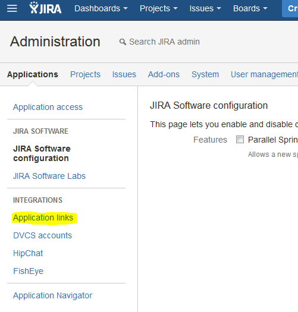
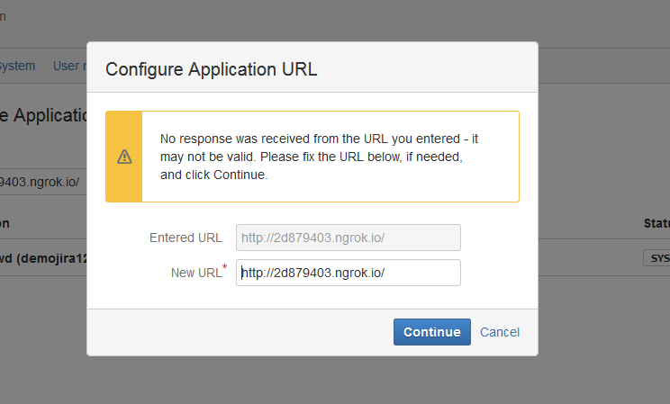
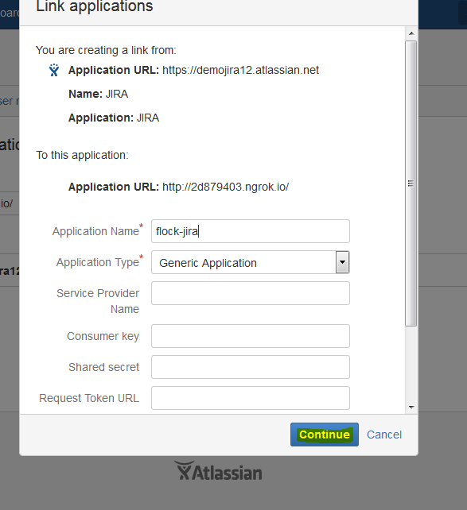
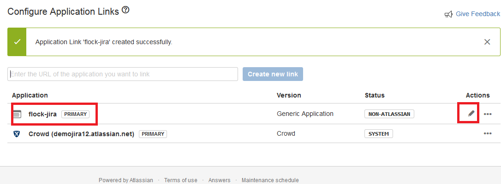
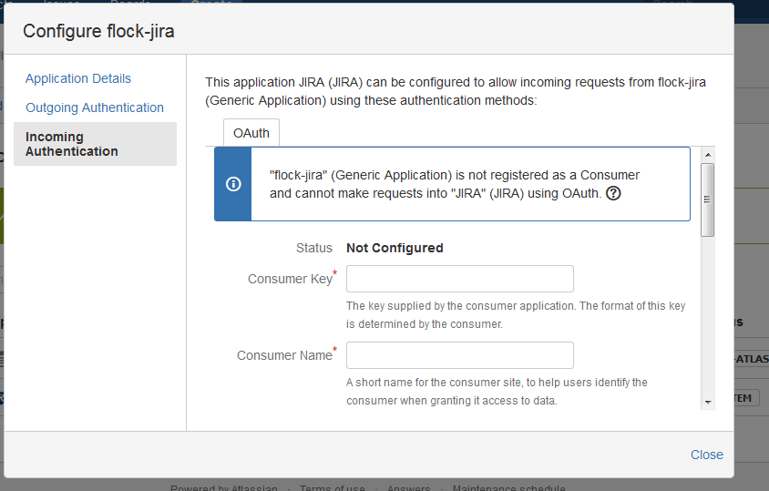
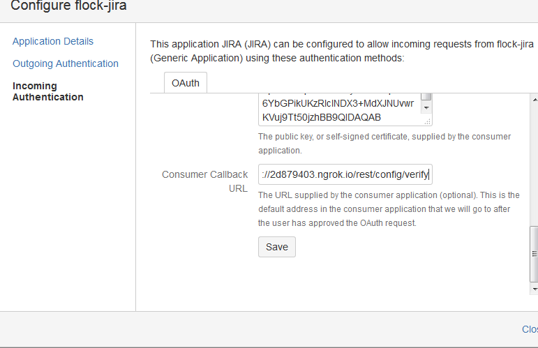
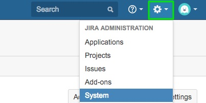

Connect with JIRA via Flock
Enter your official JIRA url and click Ok to continue
Thanks for providing your JIRA email.
Please do the following steps to complete the integration. You required following keys in the steps.
1. HostName: {{hostname}}
2. Public Key: {{publicKey}}
3. Consumer Key: {{consumerKey}}
4. Webhook URL: {{webhook}}
5. CallBack URL Key: {{callBackUrl}}
6. Application Name: {{applicationName}}
Congrats!! The integration is successfully completed
In JIRA, click on Applications under the JIRA Administration menu.

Click Application Links under Integrations in the sidebar. And provide Hostname which you want to link

Click on the Continue button.

After continuing provide Application Name as shown in below screenshot

Now your application link with the providedApplication Name successfully created.Now edit the same application as highlighted.

You need to configure your application under Incoming Authentication in the side bar.

Provide Primary and Consumer Keys here and click on save button.

To report a problem with this app, click here. You can also check JIRA's documentation here.
In JIRA, click on System under the JIRA Administration menu.

Select Webhooks under Advanced in the sidebar.
Click on the Create a Webhook button.
Paste the Flock Webhook URL which you just generated.
Click the Create button at the bottom when you're done.
To report a problem with this app, click here. You can also check JIRA's documentation here.